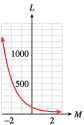

Section 4.3 Logarithms
¶Subsection 4.3.1 Introduction
In this section, we introduce a new mathematical tool called a logarithm, which will help us solve exponential equations.
Suppose that a colony of bacteria doubles in size every day. If the colony starts with \(50\) bacteria, how long will it be before there are \(800\) bacteria? We answered questions of this type in Section 4.2 by writing and solving an exponential equation. The function
gives the number of bacteria present on day \(t\text{,}\) so we must solve the equation
Dividing both sides by 50 yields
The solution of this equation is the answer to the following question:
To what power must we raise \(2\) in order to get \(16\text{?}\)
The value of \(t\) that solves the equation is called the base \(2\) logarithm of \(16\text{.}\) Because \(2^4 = 16\text{,}\) the base \(2\) logarithm of \(16\) is \(4\text{.}\) We write this as
In other words, we solve an exponential equation by computing a logarithm. You can check that \(t = \alert{4}\) solves the problem stated above:
Thus, the unknown exponent is called a logarithm. In general, for positive values of \(b\) and \(x\text{,}\) we make the following definition.
Definition of Logarithm.
For \(b\gt 0, b\ne 1\text{,}\) the base \(b\) logarithm of \(x\), written \(\log_{b}(x)\text{,}\) is the exponent to which \(b\) must be raised in order to yield \(x\text{.}\)
Note 4.3.1.
It will help to keep in mind that a logarithm is just an exponent.
Some logarithms, like some square roots, are easy to evaluate, while others require a calculator. We will start with the easy ones.
Example 4.3.2.
Compute the logarithms.
\(\log_{3} (9)\)
\(\log_{5} (125) \)
\(\log_{4} \left(\dfrac{1}{16}\right)\)
\(\log_{5} \left(\sqrt{5}\right)\)
-
To evaluate \(\log_{3} (9)\text{,}\) we ask what exponent on base \(3\) will produce \(9\text{.}\) Or, 3 to what power equals 9? The exponent we need is \(\alert{2}\text{,}\) so
\begin{equation*} \log_{3} (9) = \alert{2}~~ \text{ because } ~~3^\alert{2} = 9 \end{equation*}We use similar reasoning to compute the other logarithms.
\(\log_{5} (125) = \alert{3}~~ \text{ because } ~~5^\alert{3} = 125\)
\(\log_{4} \left(\dfrac{1}{16}\right)= \alert{-2} ~~\text{ because } ~~4^{\alert{-2}} = \dfrac{1}{16}\)
\(\log_{5} \left(\sqrt{5}\right) = \alert{\dfrac{1}{2}}~~ \text{ because }~~ 5^{\alert{1/2}} =\sqrt{5}\)
Checkpoint 4.3.3.
Find each logarithm.
\(\log_{3}(81)\)
\(\log_{}\left(\dfrac{1}{1000}\right)\)
\(4\)
\(-3\)
From the definition of a logarithm and the examples above, we see that the following two statements are equivalent.
Logarithms and Exponents: Conversion Equations.
If \(b \gt 0\text{,}\) \(b\ne 1\text{,}\) and \(x \gt 0\text{,}\)
In other words, the logarithm, \(y\text{,}\) is the same as the exponent in \(x = b^y\text{.}\) We see again that a logarithm is an exponent; it is the exponent to which \(b\) must be raised to yield \(x\text{.}\)
These equations allow us to convert from logarithmic to exponential form, or vice versa. You should memorize the conversion equations, because we will use them frequently.
As special cases of the equivalence in (1), we can compute the following useful logarithms. For any base \(b \gt 0, b\ne 1\text{,}\)
Some Useful Logarithms.
Example 4.3.4.
\(\log_{2}(2) = 1\)
\(\log_{5}(1) = 0\)
\(\log_{3}(3^4) = 4\)
Checkpoint 4.3.5.
Find each logarithm.
\(\log_{n}(1)\)
\(\log_{n}(n^3)\)
\(0\)
\(3\)
Subsection 4.3.2 Using the Conversion Equations
We use logarithms to solve exponential equations, just as we use square roots to solve quadratic equations. Consider the two equations
We solve the first equation by taking a square root, and we solve the second equation by computing a logarithm:
The operation of taking a base \(b\) logarithm is the inverse operation for raising the base \(b\) to a power, just as extracting square roots is the inverse of squaring a number.
Every exponential equation can be rewritten in logarithmic form by using the conversion equations. Thus,
are equivalent statements, just as
are equivalent statements. Rewriting an equation in logarithmic form is a basic strategy for finding its solution.
Example 4.3.6.
Rewrite each equation in logarithmic form.
\(2^{-1} = \dfrac{1}{2}\)
\(a^{1/5} = 2.8\)
\(6^{1.5} = T\)
\(M^v = 3K\)
First identify the base \(b\text{,}\) and then the exponent or logarithm \(y\text{.}\) Use the conversion equations to rewrite \(b^y = x\) in the form \(\log_{b}(x) = y\text{.}\)
The base is \(2\) and the exponent is \(-1\text{.}\) Thus, \(\log_{2}\left(\dfrac{1}{2}\right)= -1\text{.}\)
The base is \(a\) and the exponent is \(\dfrac{1}{5}\text{.}\) Thus, \(\log_{a}(2.8) = \dfrac{1}{5}\text{.}\)
The base is \(6\) and the exponent is \(1.5\text{.}\) Thus, \(\log_{6}(T) = 1.5\text{.}\)
The base is \(M\) and the exponent is \(v\text{.}\) Thus, \(\log_{M}(3K) = v\text{.}\)
Checkpoint 4.3.7.
Rewrite each equation in logarithmic form.
\(8^{-1/3} = \dfrac{1}{2}\)
\(5^x = 46\)
\(\log_{8} \left(\dfrac{1}{2} \right)=\dfrac{-1}{3} \)
\(\log_{5} (46)=x \)
Subsection 4.3.3 Base 10 Logarithms
Some logarithms are used so frequently in applications that their values are programmed into scientific and graphing calculators. These are the base \(10\) logarithms, such as
Base \(10\) logarithms are called common logarithms, and the subscript \(10\) is often omitted, so that \(\log_{} (x)\) is understood to mean \(\log_{10}(x)\text{.}\)
To evaluate a base \(10\) logarithm, we use the LOG key on a calculator. Many logarithms are irrational numbers, and the calculator gives as many digits as its display allows. We can then round off to the desired accuracy.
Example 4.3.8.
Approximate the following logarithms to \(2\) decimal places.
\(\log_{} (6.5)\)
\(\log_{} (256)\)
-
The keying sequence
LOG\(6.5\))ENTERproduces the display\(\log_{} (6.5)\) \(\) \(\) \(\) \(\) \(.812913566\) so \(\log_{} (6.5)\approx 0.81\text{.}\)
The keying sequence
LOG\(256\))ENTERyields \(2.408239965\text{,}\) so \(\log_{} (256) \approx 2.41\text{.}\)
Note 4.3.9.
We can check the approximations found in Example 4.3.8 with our conversion equations. Remember that a logarithm is an exponent, and in this example the base is \(10\text{.}\) We find that
so our approximations are reasonable, although you can see that rounding a logarithm to \(2\) decimal places does lose some accuracy.
For this reason, rounding logarithms to \(4\) decimal places is customary.
Checkpoint 4.3.10.
Evaluate \(\log_{} (250)\text{,}\) and round your answer to two decimal places. Check your answer using the conversion equations.
Evaluate \(\log_{} (250)\text{,}\) and round your answer to four decimal places. Check your answer using the conversion equations.
\(2.40\)
\(2.3979\)
Subsection 4.3.4 Solving Exponential Equations
We can now solve any exponential equation with base \(10\text{.}\) For instance, to solve the equation \(16 \cdot 10^t = 360\text{,}\) we first divide both sides by \(16\) to obtain
Then we convert the equation to logarithmic form and evaluate:
To \(4\) decimal places, the solution is \(1.3522\text{.}\)
To solve exponential equations involving powers of 10, we can use the following steps.
Steps for Solving Base 10 Exponential Equations.
Isolate the power on one side of the equation.
Rewrite the equation in logarithmic form.
Use a calculator, if necessary, to evaluate the logarithm.
Solve for the variable.
Example 4.3.11.
Solve the equation \(~~38 = 95 - 15 \cdot 10^{0.4x}\)
First, we isolate the power of \(10\text{:}\) We subtract \(95\) from both sides of the equation and divide by \(-15\) to obtain
Next, we convert the equation to logarithmic form as
Solving for \(x\) yields
We can evaluate this expression on the calculator by entering
LOG \(3.8\) ) ÷ \(0.4\) ENTER
which yields \(1.449458992\text{.}\) Thus, to four decimal places, \(x \approx 1.4495\text{.}\)
Caution 4.3.12.
Be careful when using a calculator to evaluate expressions involving logs. We can evaluate a single logarithm like \(\log_{} (3.8)\) by entering LOG \(3.8\)ENTER without an ending parenthesis, so that the calculator shows
| \(\log_{} (3.8)\) | \(\) | \(\) |
| \(\) | \(\) | \(.5795835966\) |
But if we want to evaluate \(\dfrac{\log_{} (3.8)}{0.4}\text{,}\) we must enclose \(3.8\) in parentheses, as shown in Example 4.3.11. If we omit the parenthesis after \(3.8\text{,}\) the calculator will interpret the expression as \(\log\left(\dfrac{3.8}{0.4}\right)\text{,}\) which is not the expression we wanted.
Checkpoint 4.3.13.
Solve \(~~12 - 30(10^{-0.2x} ) = 11.25\)
\(8.01\)
Subsection 4.3.5 Application to Exponential Models
We have seen that exponential functions are used to describe some applications of growth and decay, \(P(t) = P_0b^t\text{.}\) There are two common questions that arise in connection with exponential models:
Given a value of \(t\text{,}\) what is the corresponding value of \(P(t)\text{?}\)
Given a value of \(P(t)\text{,}\) what is find the corresponding value of \(t\text{?}\)
To answer the first question, we evaluate the function \(P(t)\) at the appropriate value. To answer the second question, we must solve an exponential equation, and this usually involves logarithms.
Example 4.3.14.
The value of a large tractor originally worth $\(30,000\) depreciates exponentially according to the formula
where \(t\) is in years. When will the tractor be worth half its original value?
We want to find the value of \(t\) for which \(V(t) = 15,000\text{.}\) That is, we want to solve the equation
We divide both sides by 30,000 to obtain
We convert the equation to logarithmic form as
and divide by \(-0.04\) to obtain
To evaluate this expression, we key in
LOG \(0.5\) ) ÷ (-) \(0.04\) ENTER
to find \(t \approx 7.525749892\text{.}\) The tractor will be worth $15,000 in approximately \(7\frac{1}{2}\) years.
Checkpoint 4.3.15.
The percentage of American homes with computers grew exponentially from 1994 to 1999. For \(t = 0\) in 1994, the growth law was
[Source: Los Angeles Times, August 20, 1999]
What percent of American homes had computers in 1994?
If the percentage of homes with computers continued to grow at the same rate, when did \(90\)% of American homes have a computer?
Do you think that the function \(P(t)\) will continue to model the percentage of American homes with computers? Why or why not?
\(25.85\%\)
\(t\approx 10.4\) (year 2004)
No, the percent of homes with computers cannot exceed \(100\%\text{.}\)
At this stage, it seems we will only be able to solve exponential equations in which the base is \(10\text{.}\) However, we will see in Section 4.4 how the properties of logarithms enable us to solve exponential equations with any base.
Subsection 4.3.6 Section Summary
¶Subsubsection 4.3.6.1 Vocabulary
Look up the definitions of new terms in the Glossary.
Logarithm
Common logarithm
Subsubsection 4.3.6.2 CONCEPTS
We use logarithms to help us solve exponential equations.
The base \(b\) logarithm of \(x\), written \(\log_{b} (x)\text{,}\) is the exponent to which \(b\) must be raised in order to yield \(x\text{.}\)
-
If \(b\gt 0\) and \(x \gt 0\text{,}\)
\begin{equation*} y=\log_{b} (x) ~~~ \text{ if and only if } ~~~x=b^y \end{equation*} The graphs of exponential functions can be transformed by shifts, stretches, and reflections.
The operation of taking a base \(b\) logarithm is the inverse operation for raising the base \(b\) to a power.
Base \(10\) logarithms are called common logarithms, and \(\log_{} (x)\) means \(\log_{10} (x)\text{.}\)
Steps for Solving Base 10 Exponential Equations.
Isolate the power on one side of the equation.
Rewrite the equation in logarithmic form.
Use a calculator, if necessary, to evaluate the logarithm.
Solve for the variable.
Subsubsection 4.3.6.3 STUDY QUESTIONS
To find \(\log_{6} (27)\) means to find an exponent \(\) that satisfies the equation .
Can a logarithm be a negative number?
-
Evaluate the following logarithms:
\(\log_{8} (8^{15})\)
\(\log_{5} (5^{\sqrt{13}})\)
\(\log_{b} (b^{2.63})\)
Guess the solution of \(10^x = 750\text{.}\) Now find an approximation correct to four decimal places. Was your guess too big or too small?
Subsubsection 4.3.6.4 SKILLS
Practice each skill in the Homework 4.3.7 problems listed.
Compute logs base \(b\) using the definition: #1–10, 59–66
Convert from exponential to logarithmic form: #11–22
Approximate logarithms: #23–34
Solve exponential equations base 10: #35–48
Solve application problems: #49–58
Exercises 4.3.7 Homework 4.3
¶For Problems 1-10, find each logarithm without using a calculator.
1.
\(\log_{7} (49)\)
\(\log_{2} (32) \)
\(2\)
\(5\)
2.
\(\log_{4} (64)\)
\(\log_{3} (27) \)
3.
\(\log_{3} (\sqrt{3}) \)
\(\log_{3} \left(\dfrac{1}{3}\right) \)
\(\dfrac{1}{2} \)
\(-1\)
4.
\(\log_{5} \left(\dfrac{1}{5}\right) \)
\(\log_{5} (\sqrt{5}) \)
5.
\(\log_{4} (4) \)
\(\log_{6} (1) \)
\(1 \)
\(0 \)
6.
\(\log_{} (1) \)
\(\log_{} (10^{-6}) \)
7.
\(\log_{8} (8^5) \)
\(\log_{7} (7^6) \)
\(5 \)
\(6 \)
8.
\(\log_{} (10^{-4}) \)
\(\log_{} (10^{-6}) \)
9.
\(\log_{} (0.1) \)
\(\log_{} (0.001) \)
\(-1 \)
\(-3 \)
10.
\(\log_{} (10,000) \)
\(\log_{} (1000) \)
For Problems 11-22, rewrite the equation in logarithmic form.
11.
\(2^{10}=1024 \)
\(\log_{2} (1024)=10\)
12.
\(11^{4}=14,641 \)
13.
\(10^{0.699}\approx 5 \)
\(\log_{} (5)\approx 0.699\)
14.
\(10^{-0.602}\approx 0.25 \)
15.
\(t^{3/2}=16 \)
\(\log_{t} (16)=\dfrac{3}{2} \)
16.
\(v^{5/3}=12 \)
17.
\(0.8^{1.2}=M \)
\(\log_{0.8} (M)=1.2 \)
18.
\(3.7^{2.5}=Q \)
19.
\(x^{5t}=W-3 \)
\(\log_{x} (W-3)=5t \)
20.
\(z^{-3t}=2P+5 \)
21.
\(3^{-0.2t}=2N_0 \)
\(\log_{3} (2N_0)=-0.2t \)
22.
\(10^{1.3t}=3M_0 \)
For Problems 23–26,
Solve each equation, writing your answer as a logarithm.
Use trial and error to approximate the logarithm to one decimal place.
For Problems 27–30,
By computing successive powers of the base, trap each log between two integers.
Use a graph to approximate each logarithm to the nearest hundredth. (Hint: Use the conversion equations to rewrite \(x = \log_{b} (y)\) as an appropriate exponential equation.)
For Problems 31-34, use a calculator to approximate each logarithm to four decimal places. Make a conjecture about logarithms based on the results of each problem.
31.
\(\log_{} (5.43)\)
\(\log_{} (54.3)\)
\(\log_{} (543)\)
\(\log_{} (5430)\)
\(0.7348\)
\(1.7348\)
\(2.7348\)
\(3.7348\)
When the input to the common logarithm is multiplied by \(10\text{,}\) the output is increased by \(1\text{.}\)
32.
\(\log_{} (0.625)\)
\(\log_{} (0.0625)\)
\(\log_{} (0.00625)\)
\(\log_{} (0.000625)\)
33.
\(\log_{} (2)\)
\(\log_{} (4) \)
\(\log_{} (8) \)
\(\log_{} (16)\)
\(0.3010\)
\(0.6021\)
\(0.9031\)
\(1.2041\)
When the input to the common logarithm is doubled, the output is increased by about \(0.3010\text{.}\)
34.
\(\log_{} (4)\)
\(\log_{} (0.25)\)
\(\log_{} (5)\)
\(\log_{} (0.2)\)
For Problems 35-44, solve for \(x\text{.}\) Give both the exact answer and the solution rounded to the nearest hundredth.
35.
\(10^{-3x}=5 \)
\(-0.23\)
36.
\(640=10x^3 \)
37.
\(25\cdot 10^{0.2x}=80 \)
\(2.53\)
36.
\(8\cdot 10^{1.6x}=312 \)
39.
\(12.2=2\left(10^{1.4x}\right)-11.6 \)
\(0.77\)
40.
\(163=3\left(10^{0.7x}\right)-49.3 \)
41.
\(3\left(10^{-1.5x}\right)-14.7=17.1 \)
\(-0.68\)
42.
\(4\left(10^{-0.6x}\right)+16.1=28.2 \)
43.
\(80\left(1-10^{-0.2x}\right) =65 \)
\(3.63\)
44.
\(250\left(1-10^{-0.3x}\right) =100 \)
In Problems 45–48, each calculation contains an error.Identify the error and without simply correcting it, explain why it is a mistake.
45.
\(2\cdot 5^x\ne 10^x\text{;}\) the first step should be to divide both sides of the equation by \(2\text{;}\) \(x = \log_{5} (424)\text{.}\)
46.
47.
\(\frac{10^{4x}}{4} \ne 10^x\text{;}\) the first step should be to write \(4x = \log_{} (20)\text{;}\) \(x = \frac{\log_{} (20)}{4}\text{.}\)
48.
49.
The population of the state of California increased during the years 1990 to 2000 according to the formula
where \(t\) is measured in years since \(1990\text{.}\)
What was the population in \(2000\text{?}\)
Assuming the same rate of growth, estimate the population of California in the year \(2015\text{.}\)
When did the population of California reach \(35,000,000\text{?}\)
When should the population reach \(40\) million?
Graph the function \(P\) with a suitable domain and range, then verify your answers to parts (a) through (d).
\(33,855,812\)
\(38,515,295\text{;}\) \(~41,080,265\text{;}\) \(~43,816,051\)
\(2002\)
\(2012\)

50.
The population of the state of New York increased during the years 1990 to 2000 according to the formula
where \(t\) is measured in years since \(1990\text{.}\)
What was the population in \(2000\text{?}\) Give units in your answer.
Assuming the same rate of growth, estimate the population of New York in millions in the year \(2015\text{.}\)
When did the population of New York reach \(20,000,000\text{?}\)
When should the population reach \(30,000,000\text{?}\)
Graph the function \(P\) with a suitable domain and range, then verify your answers to parts (a) through (d).
51.
The absolute magnitude, \(M\text{,}\) of a star is a measurement of its brightness. For example, our Sun, not a particularly bright star, has magnitude \(M = 4.83\text{.}\) The magnitude in turn is a measure of the luminosity, \(L\text{,}\) or amount of light energy emitted by the star, where
The luminosity of a star is measured in solar units, so that our Sun has luminosity \(L = 1\text{.}\) Use the values of \(L\) and \(M\) for the Sun to calculate a value of \(L_0\) in the equation above.
Is luminosity an increasing or decreasing function of magnitude? Graph the function on the domain \([-3, 3]\text{.}\) What is its range on that domain?
The luminosity of Sirius is \(22.5\) times that of the Sun, or \(L = 22.5\text{.}\) Calculate the magnitude of Sirius.
If two stars differ in magnitude by \(5\text{,}\) what is the ratio of their luminosities?
A decrease in magnitude by \(1\) corresponds to an increase in luminosity by what factor? Give an exact value and an approximation to four decimal places.
Normal stars have magnitudes between \(-10\) and \(19\text{.}\) What range of luminosities do stars exhibit?
\(85.5\)
-
Decreasing; range: \([5.4, 1355.2]\)
 \(1.45\)
\(\dfrac{1}{100} \)
\(10^{0.4}\approx 2.5119 \)
\(2.15\times 10^{-6}\) to \(855,067\)
52.
The loudness of a sound is a consequence of its intensity, \(I\text{,}\) or the amount of energy it generates, in watts per square meter. The intensity is related to the decibel level, \(D\text{,}\) which is another measure of loudness, by
Is intensity an increasing or decreasing function of decibel level? The faintest sound a healthy human can hear is \(0\) decibels. What is the intensity of a \(0\) decibel sound?
A whisper produces an energy intensity of \(10^{-9}\) watts per square meter. What is the decibel level of a whisper?
If two sounds differ in loudness by \(10\) decibels, what is the ratio of their intensities?
An increase in loudness of \(1\) decibel produces a just noticeable difference to the human ear. By what factor does the intensity increase?
Sounds of \(130\) decibels are at the threshold of pain for people. What is the range of the intensity function on the domain \([0, 130]\text{?}\)
The atmospheric pressure decreases with altitude above the surface of the Earth. For Problems 53–58, use the function
where altitude, \(h\text{,}\) is given in miles and atmospheric pressure, \(P\text{,}\) in inches of mercury. Graph this function in the window
Solve the problems below algebraically, and verify with your graph.
53.
The elevation of Mount Everest, the highest mountain in the world, is \(29,028\) feet. What is the atmospheric pressure at the top?
54.
The elevation of Mount McKinley, the highest mountain in the United States, is \(20,320\) feet. What is the atmospheric pressure at the top?
55.
How high above sea level is the atmospheric pressure \(20.2\) inches of mercury?
\(1.91\) mi
56.
How high above sea level is the atmospheric pressure \(16.1\) inches of mercury?
57.
Find the height above sea level at which the atmospheric pressure is equal to one-half the pressure at sea level.
58.
Find the height above sea level at which the atmospheric pressure is equal to one-fourth the pressure at sea level.
What is the altitude at sea level?
For Problems 59-66, simplify the expression.
59.
\(\log_{2} (\log_{4} (16)) \)
\(1\)
60.
\(\log_{5} (\log_{5} (5)) \)
61.
\(\log_{} [\log_{3} (\log_{5} (125)) ] \)
\(0\)
62.
\(\log_{} \left(\log_{2} (\log_{3} (9))\right) \)
63.
\(\log_{2} \left(\log_{2} (\log_{3} (81))\right) \)
\(1\)
64.
\(\log_{4} \left(\log_{2} (\log_{3} (81))\right) \)
65.
\(\log_{b} (\log_{b} (b)) \)
\(0\)
66.
\(\log_{b} (\log_a (a^b)) \)